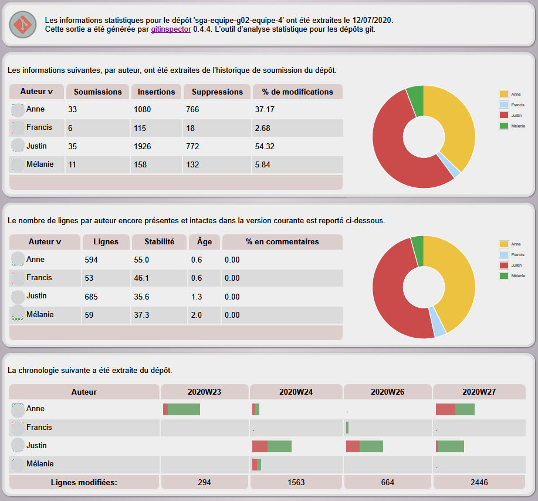

Ce chapitre contient des informations sur le volet technique des laboratoires.
20.1 JavaScript/TypeScript
Pour la personne ayant déjà des connaissances Java (de LOG121), il est recommandé d’apprendre les choses dans cet ordre :
- JavaScript - un tutoriel intéressant (et libre) est sur fr.javascript.info. Je vous recommande de contribuer à des traductions en français sur GitHub.
- TypeScript - ce tutoriel est en anglais, mais il est adapté à des personnes ayant déjà une expérience en Java/C#.
Voici des points importants pour le projet de laboratoire, organisés pour quelqu’un ayant déjà des connaissances en Java :
- TypeScript se traduit (« emit ») en JavaScript, alors il faut comprendre le moteur d’exécution JavaScript.
- Pour convertir une chaîne en nombre, pour lire ou écrire un fichier sur disque, etc., on utilise des opérations en JavaScript.
- Un type en TypeScript est comme un ensemble de valeurs plutôt qu’une définition hiérarchique. En Java, il n’est pas possible d’avoir un type pouvant être soit une chaîne soit un nombre. Mais en TypeScript, c’est facile de déclarer un type comme une union de plusieurs types, p. ex.
string | number. - JavaScript a des notions de « truthy » et « falsy » (conversion d’une expression à une valeur booléenne) permettant de vérifier avec moins de code si une variable est définie ou initialisée, etc.
- L’opérateur d’égalité stricte (
===) (sans conversion de type) - Les fonctions fléchées (fat arrow functions en anglais)
- Le traitement asynchrone en JavaScript
- Promesses et
async/await
- Promesses et
- Les services REST (GET vs PUT)
- Environnement de test (Jest)
- Les gabarits (templates) PUG (anciennement Jade) : Tutoriel (court), Tutoriel (plus complet)
- Bootstrap (mise en page avec CSS) : Tutoriel (attention, il faut appliquer les éléments dans les gabarits PUG)
Le lab 0 aborde plusieurs de ces aspects, mais certaines notions sont plus complexes et nécessitent une étude approfondie. Le but de cette section est de donner des tutoriels plus spécifiques. Enseigner la syntaxe ou les principes du langage TypeScript n’est pas le but de ce manuel, mais apprendre à trouver l’information soi-même est essentiel pour une personne travaillant dans les technologies de l’information.
Il y a un dépôt d’exemples avec TypeScript (utilisant ts-node pour les voir facilement) sur GitHub. Il y a un exemple qui montre comment faire des REST à partir de TypeScript avec le système SGB.
20.2 JavaScript : Truthy et Falsy (conversion en valeur booléenne)
JavaScript offre un mécanisme simple pour vérifier des valeurs dans une expression if. Imaginez l’exemple suivant :
let maVariable;
// d'autres instructions...
if (maVariable != undefined
&& maVariable != null
&& maVariable != '') {
// on peut faire quelque chose avec maVariable ...
}On vérifie trois possibilités pour maVariable avant de l’utiliser. Ce genre de situation arrive souvent en JavaScript, puisque les objets peuvent prendre les valeurs différentes selon le contexte. Il serait bien de pouvoir réduire la quantité de code dans ces cas.
Grâce à la notion de conversion de valeur selon la règle de « truthy » et « falsy », JavaScript permet de simplifier les instructions en une seule condition, sans ET (&&), en convertissant la valeur de maVariable en booléenne true ou false:
// conversion booléenne selon la règle de "truthy" et "falsy"
if (maVariable) {
// on peut faire quelque chose avec maVariable ...
}Il faut comprendre la règle de conversion en valeur booléenne selon « truthy » et « falsy ». En fait, il est plus simple de commencer par les valeurs se traduisant en false (« falsy »), car tout ce qui ne l’est pas est donc true (« truthy »).
20.2.1 Falsy
Les valeurs suivantes se convertissent en false dans une condition :
falsenullundefined0(attention, c’est parfois un piège)NaN(not a number)''ou""(chaîne vide)
20.2.2 Truthy
Tout ce qui n’est pas converti en false (expliqué ci-dessus) est converti en true. En voici quelques exemples :
{}(objet vide)[](tableau vide)-20- etc.
N’oubliez pas que la valeur de 0 est « falsy » dans une condition. C’est souvent un piège en JavaScript quand on considère les variables qui peuvent avoir une valeur numérique. Par exemple, si on fait if (maVariable) pour tester si une variable est définie, si la variable est définie et a sa valeur est 0, la condition sera false.
20.3 Évaluer les contributions des membres de l’équipe
Il existe un outil nommé gitinspector qui peut indiquer le niveau d’implication des membres de l’équipe dans un projet sur GitHub. Étant donné que les laboratoires de ce manuel utilise un squelette avec les tests, les fichiers src de TypeScript, les modèles PlantUML et le README.md, il est possible d’utiliser gitinspector pour voir des rapports de contribution sur chacun des volets.
Pour faciliter l’utilisation de l’outil, le professeur Fuhrman a créé un script en bash. Voici comment l’utiliser :
- Installer
gitinspectordans npm avec la commandenpm install -g gitinspector - Télécharger le script
git clone \
https://gist.github.com/fuhrmanator/b5b098470e7ec4536c35ca1ce3592853 \
contributionsCloning into 'contributions'...
remote: Enumerating objects: 10, done.
remote: Counting objects: 100% (10/10), done.
remote: Compressing objects: 100% (5/5), done.
remote: Total 10 (delta 3), reused 7 (delta 2), pack-reused 0
Unpacking objects: 100% (10/10), 2.02 KiB | 82.00 KiB/s, done.- Lancer le script sur un dépôt de code source, par exemple
sga-equipe-g02-equipe-4:
cd contributions
./contributions.sh ../sga-equipe-g02-equipe-4/gitinspector running on ../sga-equipe-g02-equipe-4/ : patience...
ContributionsÉquipeTest.html
ContributionsÉquipeModèles.html
ContributionsÉquipeDocs.html
ContributionsÉquipeTypeScript.html
ContributionsÉquipeViews.htmlLes fichiers .html sont créés pour les contributions Test, Modèles, Docs, TypeScript et Views. Chaque rapport indique les contributions selon deux perspectives :
- Le nombre de soumissions par auteur (activité git)
- Le nombre de lignes par auteur encore présentes et intactes dans la version HEAD
Vous pouvez voir un exemple du rapport à la figure 20.1.

gitinspector.20.3.1 Faire le bilan de la contribution de chacun
Après l’évaluation à la fin de chaque itération, il est important de considérer combien chacun a contribué au projet et de valider avec les responsabilités prévues dans le plan de l’itération. Il est normal d’avoir un écart entre le travail prévu et le travail effectué. Un des objectifs du bilan est d’essayer d’expliquer les gros écarts et de corriger ou mitiger les problèmes.
Par exemple, on peut voir à la figure 20.1 que les deux coéquipiers Anne et Justin ont fait une contribution beaucoup plus importante que les autres coéquipiers Francis et Mélanie. Dans le bilan de l’itération, on doit indiquer explicitement ce fait, même avec des pourcentages.
Une phrase vague comme « certains ont travaillé plus que d’autres » est une formulation diplomatique, mais elle n’est pas assez explicite et n’est pas une résolution proactive du problème le cas échéant.
20.3.2 Proposer des solutions si besoin
Une inégalité importante dans les contributions est un signal d’alarme. On doit agir, mais on commence par poser des questions, par exemple :
- Est-ce que Francis et Mélanie sont à l’aise avec les technologies utilisées dans le lab, ont-ils besoin de coaching ?
- Sont-ils des « parasites » ou « mollassons » (Oakley et al. 2004) (traduction française de l’article) ? À certaines universités, le plan de cours vous permet d’exclure leurs noms du rapport (et ils auront une note de zéro pour la remise), mais seulement s’ils n’ont rien fait du tout (ce qui n’est pas le cas dans l’exemple ci-dessus). Une personne exclue de cette manière va probablement abandonner le cours et vous perdrez définitivement un coéquipier.
- Est-ce que Anne et Justin ont laissé suffisamment de liberté aux autres pour faire une contribution importante ? Font-ils assez confiance aux autres ?
- Avez-vous fait un plan d’itération assez détaillé pour que chacun puisse contribuer adéquatement ? Dans l’exemple ci-dessus, peut-être Francis et Mélanie ont-ils trouvé ça difficile de savoir où contribuer ?
- Est-ce que tout le monde assiste aux séances de laboratoire ?
- Est-ce que tout le monde travaille au moins 6 heures en dehors des séances encadrées?
- Est-ce que certains coéquipiers travaillent excessivement, sans donner la chance aux autres de contribuer ? N’oubliez pas que les laboratoires sont une manière d’apprendre à pratiquer la matière de ce manuel. Laisser un ou deux coéquipiers faire plus de travail peut nuire à la valeur pédagogique des laboratoires (ça peut faire mal à l’examen final pour ceux qui ont moins contribué). Il y a aussi un risque sur le plan de la Redondance des compétences dans l’équipe (Bus Factor), surtout si un coéquipier qui travaille beaucoup plus que les autres éprouve un problème d’épuisement à cause du fait qu’il travaille trop.
- Est-ce que tout le monde utilise un moyen de communiquer de manière synchrone et asynchrone (Slack, Discord, Teams, etc.) ? Le courriel n’est pas l’outil idéal pour coordonner un travail en équipe.
- etc.
Dans le bilan il faut constater les faits et proposer des solutions pour éviter des inégalités importantes sur le plan de la contribution dans les prochaines itérations. Ainsi, vous gérez les problèmes de manière plus proactive.
20.3.3 FAQ pour gitinspector
Q : Comment fusionner le travail réalisé par le même coéquipier, mais avec plusieurs comptes (courriels) différents ?
R : La solution est avec le fichier .mailmap. Vous pouvez rapidement générer un fichier de base avec la commande :
git shortlog -se | sed "s/^.*\\t//" > .mailmapEnsuite, modifiez le fichier .mailmap pour respecter ce format :
Prénom Nom Désirés <courriel> Prénom Nom Non-Désirés <courriel>Par exemple, soit le .mailmap initial qui contient quatres entrées pour le même auteur :
C. Fuhrman <christopher.fuhrman@etsmtl.ca>
Christopher (Cris) Fuhrman <christopher.fuhrman@etsmtl.ca>
Christopher Fuhrman <christopher.fuhrman@etsmtl.ca>
Cris Fuhrman <fuhrmanator+git@gmail.com>On décide de garder l’alias C. Fuhrman <christopher.fuhrman@etsmtl.ca> pour chaque nom :
C. Fuhrman <christopher.fuhrman@etsmtl.ca>
C. Fuhrman <christopher.fuhrman@etsmtl.ca> Christopher (Cris) Fuhrman <christopher.fuhrman@etsmtl.ca>
C. Fuhrman <christopher.fuhrman@etsmtl.ca> Christopher Fuhrman <christopher.fuhrman@etsmtl.ca>
C. Fuhrman <christopher.fuhrman@etsmtl.ca> Cris Fuhrman <fuhrmanator+git@gmail.com>Le nom que vous mettez sera celui qui apparaît dans les rapports la prochaine fois qu’ils seront générés.
Q : Comment exclure le travail réalisé par un chargé de laboratoire (par exemple le clone initial dans GitHub Classroom) ?
R : La solution est d’ajouter le nom de l’auteur dans le tableau du script contributions.sh à la ligne suivante avec authorsToExcludeArray. Attention :
- Il n’y a pas de
,entre les éléments des tableaux en bash. - Le nom d’un auteur ayant un accent ne sera pas reconnu. Il faut changer le nom dans le
.mailmappour qu’il n’y ait pas d’accents, ou utiliser une chaîne partielle comme"Benjamin Le"pour exclure les contributions de"Benjamin Le Dû".
authorsToExcludeArray=("C. Fuhrman" "Benjamin Le" "Yvan Ross")Q : J’ai une autre question…
R : Il y a aussi une FAQ sur le dépôt de gitinspector.